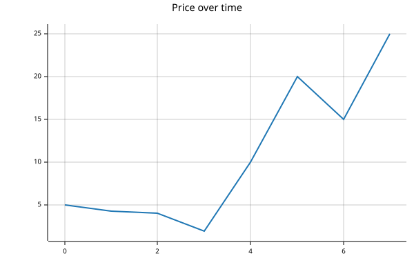

BFrame
def BFrame(
*values, keys:NoneType=None, names:NoneType=None, **fields
):A native BPL value with shape, keys and names. An array that holds a function as a direct item is a FunctionArray.
A native BPL value with shape, keys and names. An array that holds a function as a direct item is a FunctionArray.
Select by positions, keys, slices or per-axis masks. None inserts an axis and ... keeps omitted axes.
| Number | City | Gender | Age | Income | Illness | |
|---|---|---|---|---|---|---|
| 0 | 1 | Dallas | Male | 41 | 40367.0 | No |
| 1 | 2 | Dallas | Male | 54 | 45084.0 | No |
| Number | City | Gender | Age | Income | Illness | |
|---|---|---|---|---|---|---|
| 0 | 1 | Dallas | Male | 41 | 40367.0 | No |
| 1 | 2 | Dallas | Male | 54 | 45084.0 | No |
{'mean': 91252.79827333333,
'std': 24989.417649879582,
'skew': -0.3336387312149909,
'kurt': 3.5203677711666033,
'hyper-skew': -1.9377651398953264}{'mean': +/÷≢, 'rmse': (+/÷≢)@⊼}| Age | Income | ||
|---|---|---|---|
| Male | mean | 44.912625 | 95670.247196 |
| rmse | 46.375580 | 98752.067539 | |
| Female | mean | 44.997764 | 85660.921843 |
| rmse | 46.467042 | 89097.223741 |
| Income | ||
|---|---|---|
| Male Dallas | mean | 49722.384021 |
| Female Dallas | mean | 39602.533142 |
| Male New York City | mean | 101338.023920 |
| Female New York City | mean | 91171.135035 |
| Male Los Angeles | mean | 99681.616055 |
| Female Los Angeles | mean | 89732.511306 |
| Male Mountain View | mean | 139504.523354 |
| Female Mountain View | mean | 129476.667463 |
| Female Boston | mean | 85978.442530 |
| Male Boston | mean | 96071.649368 |
| Male Washington D.C. | mean | 75327.277217 |
| Female Washington D.C. | mean | 65449.164141 |
| Female San Diego | mean | 95313.831745 |
| Male San Diego | mean | 104859.014732 |
| Male Austin | mean | 94424.246272 |
| Female Austin | mean | 84958.760631 |
windows docs with arg explanations: https://answerdotai.github.io/basedpl/glyphs/up-down-arrow.html
| price | ||
|---|---|---|
| 0 | mean | 3.100000 |
| 1 | mean | 4.466667 |
| 2 | mean | 3.466667 |
| 3 | mean | 5.366667 |
| 4 | mean | 10.666667 |
| 5 | mean | 15.000000 |
| 6 | mean | 20.000000 |
| 7 | mean | 13.333333 |
| price | ||
|---|---|---|
| 0 | mean | 2.680000 |
| rmse | 3.472751 | |
| 1 | mean | 5.080000 |
| rmse | 5.732364 | |
| 2 | mean | 10.220000 |
| rmse | 12.213190 | |
| 3 | mean | 14.000000 |
| rmse | 16.431677 |
